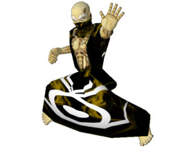

Los campeones
Nombre: Jen Comu
Edad: 25
Reino: Serengania
Preferencia mágica: Hielo
Antecedentes:
Dotada con la magia del Hielo, Jen Comu fue educada en Serengania como sacerdotisa de los dragones. Tatuada con los emblemas rituales, a Jen la educaron con disciplina en el culto del dragón y le enseñaron que el único que puede gobernar a los dragones es el emperador de Serengania, y que la gente debe adorar a los dragones y al emperador. El regreso de los dragones obliga a que el joven príncipe Weisus Xiar, primer hijo del emperador del dragón, entregue a Jen el Tomo de la Escala ordenándole que controle al señor Dragón del Agua y obtenga los tomos que quedan, el del Talón, el del Hueso y el del Fuego. Como campeona de Serengania, a Jen le han dado instrucciones de entregar el control de todos los dragones a Weisus de modo que él pueda substituir al emperador y reinar en Serengania como “amo de los dragones”.
Nombre: Elziath
Edad: 450
Reino: Andera
Preferencia mágica: Tierra
Antecedentes:
Hace 300 años Elziath fue un destacado mago que desterró a los dragones a las inmensas extensiones de hielo. Temiendo que los señores dragones destruyan la humanidad o se conviertan en esclavos de las fuerzas del mal, Andera ha resucitado a este antiguo campeón para que lleve el Tomo del Hueso y devuelva a los señores dragones y a sus familiares a los elementos de los cuales fueron creados.
Aunque es anciano, Elziath rebosa de magia de la Tierra. El alcance de sus habilidades y conocimiento es inigualable, y sólo las ambiciones de los otros campeones pueden derrotarlo. Poseyendo el Tomo del Hueso y el secreto de la magia de la Tierra, Elziath debe emprender la búsqueda de los Tomos de la Escala, del Talón y del Fuego. Con ellos podrá asegurarse de que los señores dragones regresen a sus elementos y entonces podrá descansar en paz.
Nombre: Muru Moko 
Edad: 29
Reino: Desconocido
Preferencia mágica: Tormenta
Antecedentes:
Muru Moko, campesino abandonado de niño a las afueras de Serengania, fue nombrado en honor a los espíritus de la luz y la oscuridad que reinan en su interior. Cuando se hizo hombre fue entrenado como guerrero del emperador. Joven atlético y reservado, Muru Moko se ganó una triste fama por sus poderes, que le permitían controlar a las nieblas, los relámpagos y las tormentas. Muchos comenzaron a temer su poder, por lo que fue enviado al templo del dragón para convertirse en sacerdote. Mientras se educaba en los templos del dragón de Serengania, conoció por primera vez a la hermosa sacerdotisa Jen Comu, y aunque deseaban estar unidos, la trayectoria de los sueños de Muru Moko lo alejó de ella.
Muru Moko fue consumido por el deseo del poder. Planeó liberar a los dragones y ganarse el título de “amo de los dragones”, rey de los dragones y emperador de Serengania. Desesperado por alcanzar esta ambición, viajó a Arkhoniar y convenció al reino para que lo dejaran utilizar el Tomo del Talón para liberar a los dragones. Una vez que los señores dragones estaban libres, Muru Moko robó el Tomo del Talón. Ahora él defiende su propia causa: unir los Tomos del Dragón, dominar a todos los familiares de los dragones y proclamarse “amo de los dragones” y emperador de Serengania.
Nombre: Vourak
Edad: Desconocida
Reino: Daeroviar
Preferencia mágica: Fuego
Antecedentes:
Una vez que Muru Moko liberó a los señores dragones, Daeroviar buscó inmediatamente a un campeón que pudiese controlar a estas poderosas bestias y su magia. Enterándose de que Andera había resucitado a Elziath, el mago más importante de su tiempo, Daeroviar decidió que su campeón debía estar preparado para ganar a cualquier costa.
Vourak, señor Diablo de una antigua orden de caballeros, ha sido convocado para defender la causa de Daeroviar. Arrastrado del reino de Vragalis, el señor de la Destrucción, todas las acciones de Vourak son llevadas por su amor al fuego y la ruina. Si Vourak logra unir los Tomos del Dragón, esclavizará a los dragones y los utilizará para quemar, machacar y destruir todo lo que se ponga a su paso con la creencia de que solamente sobrevivirán los más fuertes.